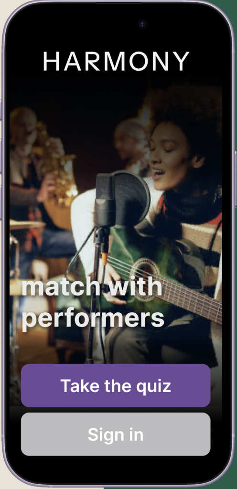
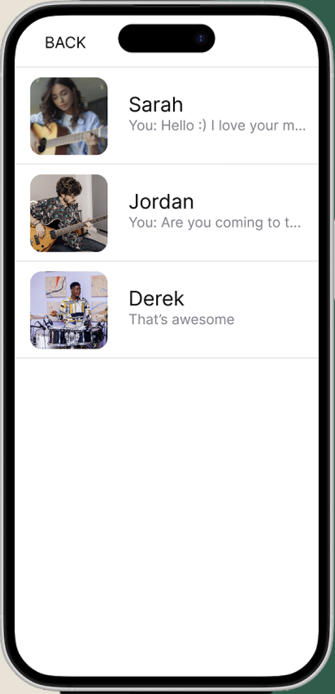
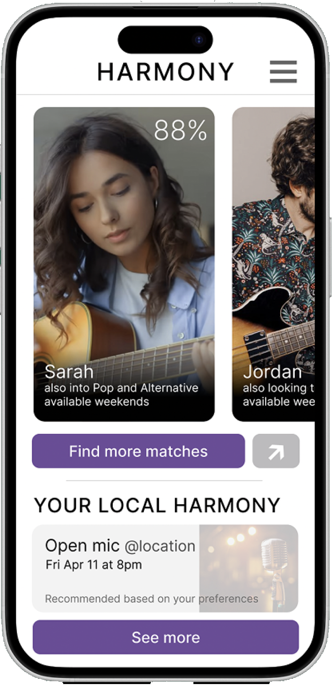
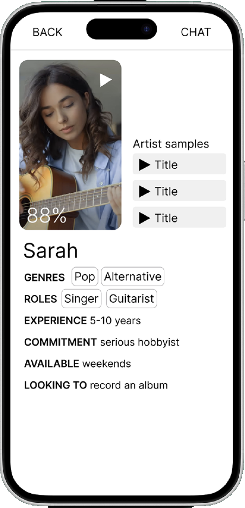
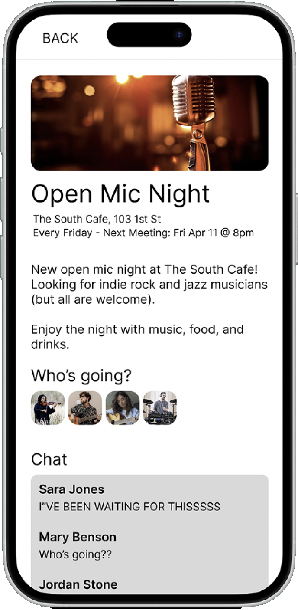

Mobile / Multi-Screen
Harmony
A social platform for musicians who want to collaborate, not just listen. I designed five connected flows and held them together as one product.

Role
Platform
Timeline
Tools
01 / Challenge
Challenge
Music apps are built for listening. If you actually play, there's nowhere to find people to play with, see what's happening locally, or show what you can do and when you're free.

02 / Solution
Solution
I interviewed working musicians about how they actually find people to play with. The answers were consistent: chemistry and shared taste matter more than follower counts, inconsistent commitment kills projects, and most collaborations happen through studio networking rather than any platform. People wanted to hear someone play before reaching out, filter by instrument and skill, and talk somewhere before committing. Those five needs became five flows, and I kept them consistent so the product felt like one thing.
- Product Design
- Design Systems
- Prototyping

Compatibility Matching
Musicians told me they filter on genre, instrument, skill level, and how seriously someone takes it — not on popularity. So matching surfaces those attributes directly, including availability, because mismatched commitment came up repeatedly as the thing that ends collaborations.

Artist Profiles
Every musician I spoke with wanted to hear someone play before reaching out. Profiles lead with audio samples, then genres, roles, experience, and what that person is actually looking to do — record, perform, or just jam. A first message has something behind it.

Local Events
Interviews split on local versus remote — people wanted both. Events covers the local half: open mics and sessions nearby, who's attending, and a thread to sort out details. It's the low-commitment way to meet someone before agreeing to anything.
03 / Impact
Impact
5
Connected Flows
2
Fidelity Stages
1
Designer
Everything moved from low fidelity to high fidelity based on what participants said rather than what looked good. The harder problem was consistency — five flows sharing one visual and interaction language, so moving from matching to a profile to a chat never felt like changing apps.
What I Learned
Consistency across a whole product is a different skill than polish on one screen. Five flows taught me more about systems thinking than any single interface would have.